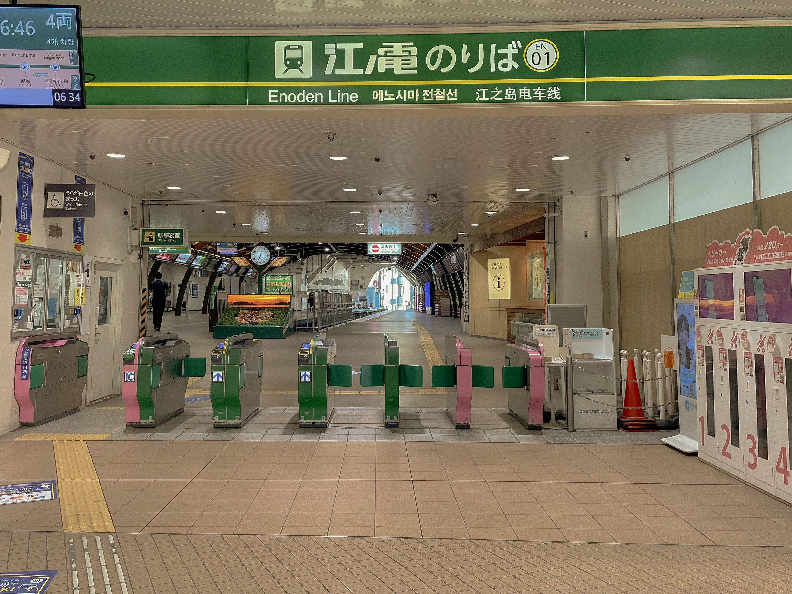
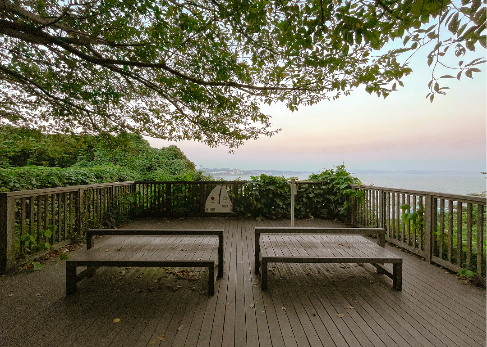
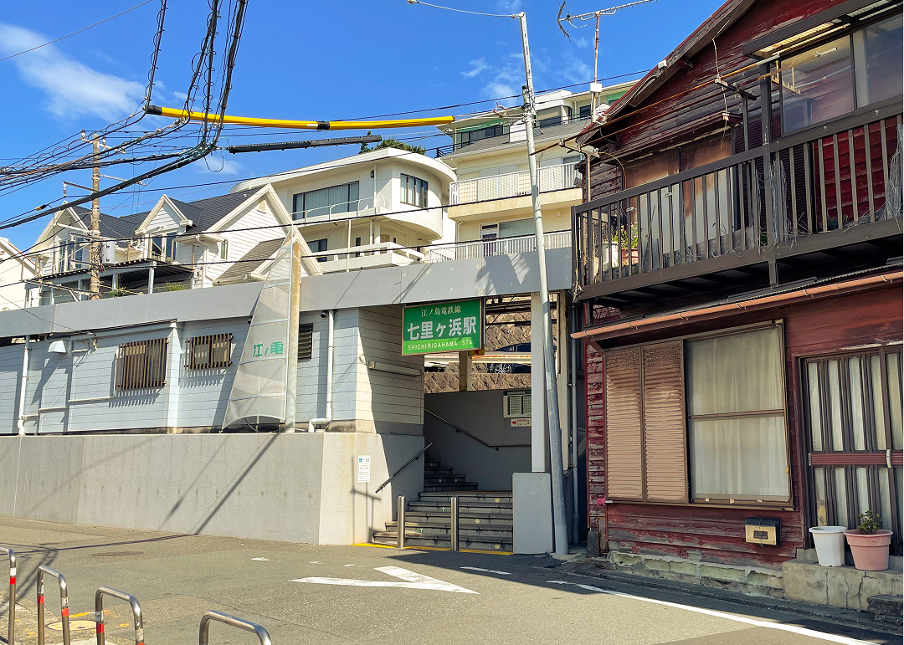
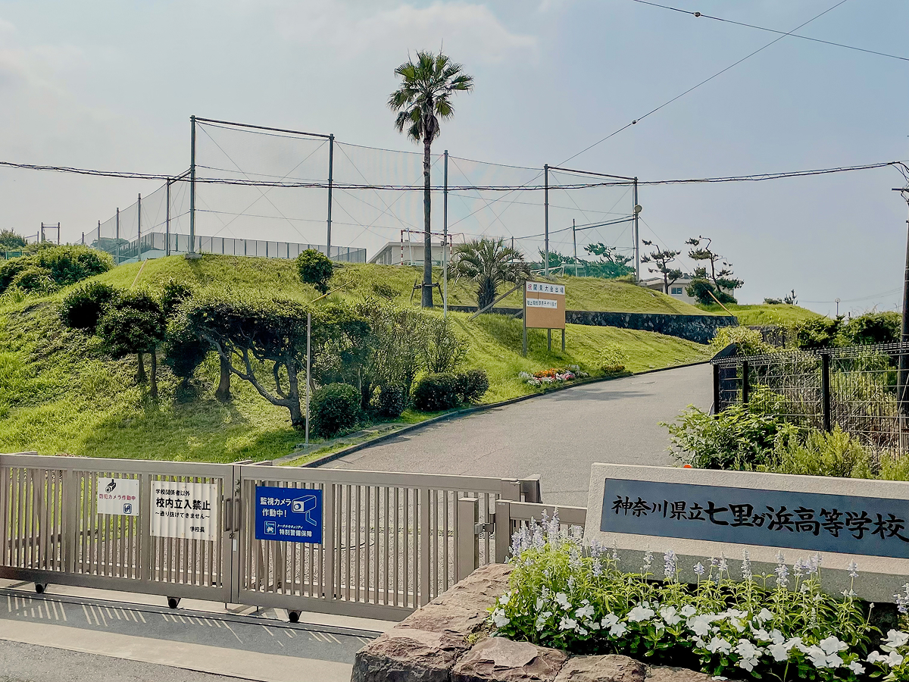
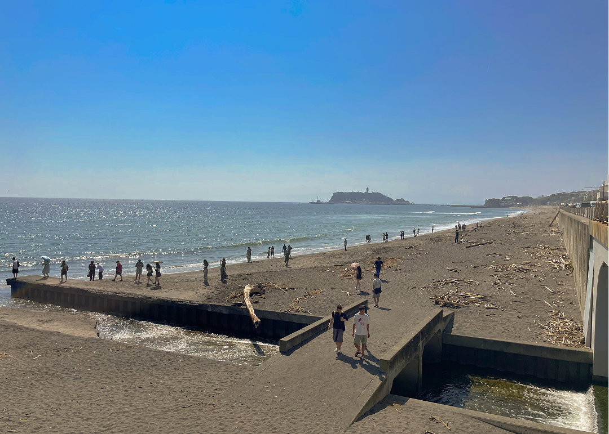

アニメ聖地をめぐる
江ノ電沿線が舞台となっているアニメで有名な作品が「青春ブタ野郎シリーズ」です。
「青春ブタ野郎シリーズ」は、鴨志田一によるライトノベルを原作とするアニメ作品です。作中で思春期症候群と称される超常現象に巻き込まれた少女たちと、主人公・梓川咲太の交流が描かれていて、「心揺れる少女たちとの切ない思春期ファンタジー」として人気を集めています。見たことない人は、ぜひこの機会に見てみてください。
Animeアニメ作品紹介
多くの作品がありますが、時系列順にご紹介します。
個人的には劇場1作品目である「青春ブタ野郎はゆめみる少女の夢を見ない」が涙なしには見れない一番の名作だと思っているので、ぜひ見てみてください。
-
青春ブタ野郎はバニーガール先輩の夢を見ない
story
不安定な精神状態によって引き起こされるとネットで噂の不思議現象--思春期症候群。梓川咲太、高校2年生。江ノ島からもほど近いとある高校に通う彼は、この年、さまざまな"思春期症候群"を引き起こした少女達と出会う。空と海が輝く街で感涙の物語が始まる。
info
TVアニメ・全13話
各動画配信サービスで配信中
青春ブタ野郎はゆめみる少女の夢を見ない
story
先輩で恋人の桜島麻衣と過ごす心踊る咲太の日常は、初恋の相手、牧之原翔子の出現により一変する。何故か翔子は「中学生」と「大人」がふたり存在しているのだ。やむなく翔子と一緒に住むことになった咲太は「大人翔子」に翻弄され、麻衣との関係がぎくしゃくしてしまう。そんな中、「中学生翔子」が重い病気を患っていることが判明し、咲太の心が揺れ動く---。
info
劇場アニメ
各動画配信サービスで配信中
青春ブタ野郎はおでかけシスターの夢を見ない
story
長年おうちが大好きだった妹の花楓は、「お兄ちゃんが行ってる高校に行きたい」と胸の内を咲太に打ち明ける。花楓にとって大きな決意で、難しい選択と知りながらも、咲太は優しく花楓の背中を押すことを決める。『かえで』から『花楓』へ託された思い---二人で踏み出す未来への物語。
info
劇場アニメ
各動画配信サービスで配信中
青春ブタ野郎はランドセルガールの夢を見ない
story
「母さんのことなんだが、花楓に会いたいと言っててな。」 それは、花楓に起きた出来事を受け止めきれず、長いこと入院していた母親から届いた「会いたい」という願い。久しぶりの対面の機会に緊張を隠しきれない中、咲太の体には見慣れない傷跡が現れる。これは新たな思春期症候群の前触れか-。
info
劇場アニメ
各動画配信サービスで配信中
青春ブタ野郎はサンタクロースの夢を見ない
story
金沢八景にある大学に進学した梓川咲太は、思春期症候群をプレゼントしていると話すミニスカサンタに出会う。「...わたしはね、霧島透子っていうの」 SNSで流行する予知夢、正体不明のネットシンガー、ボルターガイスト、謎めく現象とともに、心揺れる少女たちとの不可思議な物語が再び始まる。
info
TVアニメ
地上波・BS11にて放送中
ストーリー間接引用：各作品公式サイト
Location聖地紹介
2025年7月現在、大学生編が放送されていて、新たに舞台となったスポットもいくつかあります。そちらに関しては追々追加していけたらと思っています。
ここでは主に、高校生編(TVアニメ第1期、各劇場アニメ)の代表的な舞台をご紹介します。
-

藤沢駅Fujisawa Station
主人公・梓川咲太が住んでいる自宅の最寄駅です。JR東海道線の改札と江ノ電の改札がよく登場しています。江ノ電は主人公の通学手段として利用されています。
-

江ノ島Enoshima
主にTVアニメ第1期6話で江ノ島が多く登場します。上の写真は6話最後の名シーンの舞台となった場所です。
-

七里ヶ浜駅Shichirigahama station
主人公たちが通う学校の最寄駅として登場しています。主人公が初めて作中のメインヒロインである桜島麻衣に話しかけた場所で、ここから2人の交流がスタートします。
-

七里ヶ浜高校Shichirigahama High School
高校生編で登場人物たちが通う学校のモデルとなったものです。作中では「県立峰ヶ原高校」という名前で、校舎の窓からは海が一望できるみたいです。
-

七里ヶ浜Shichirigahama
作中でも登場頻度が高いのがこの七里ヶ浜。さまざまなシーンで登場しますが、なかでも劇場版1作品目のキーパーソンである「牧之原翔子」と主人公の出会いが印象的な舞台です。